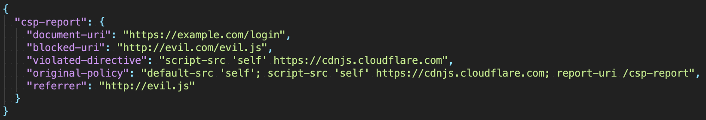
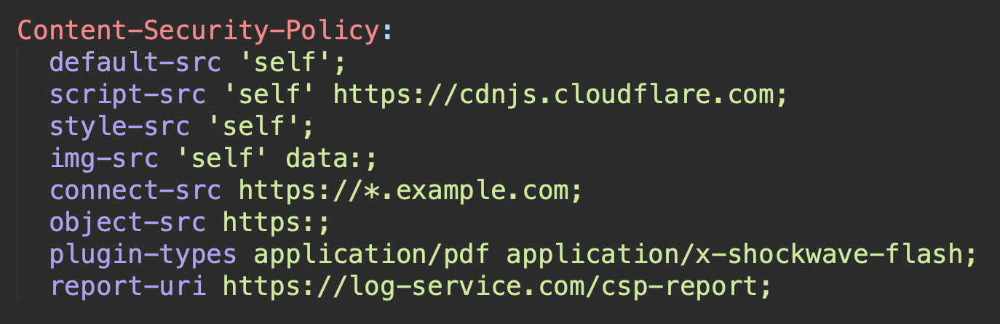

Dmitriy Kovalev
Content Security Policy is a computer security standard introduced to prevent cross-site scripting (XSS), clickjacking and other code injection attacks resulting from execution of malicious content in the trusted web page context.
CSP – штука, позволяющая сформировать белый список доверенных ресурсов, которые могут загружаться на веб-странице.
Всё, что не разрешено – запрещено.
Content-Security-Policy – общий заголовок
Content-Security-Policy-Report-Only – режим сообщения о нарушениях
| Source | https://google.com google.com:443 https: data: |
|---|---|
| Keyword | * 'none' 'self' 'unsafe-inline' 'unsafe-eval'
|
| Hash | 'sha256-...' 'nonce-...' |
Задаёт стандартные политики, которые будут использованы в случае отсутствия следующих директив:
Контроль исполняемых скриптов
script-src [source | keyword | hash]
'unsafe-inline' – разрешение инлайн script'unsafe-eval' – разрешение функции evalstyle-src [source | keyword | hash]
'unsafe-inline' – разрешение инлайн тега и атрибута style'unsafe-eval' – разрешение динамических стилей (cssText, insertRule)Контроль загружаемых изображений
img-src [source | keyword | hash]
Контроль загружаемых шрифтов
font-src [source | keyword | hash]
Контроль сетевых запросов
(XMLHttpRequest, WebSocket, EventSource, sendBeacon)
connect-src [source | keyword | hash]
Контроль встраиваемых объектов
(<object>, <embed>, <applet>)
object-src [source | keyword | hash]
Контроль интегрируемых медиа элементов
(<video>, <audio>, <source>, <track>)
media-src [source | keyword | hash]
Контроль веб-воркеров и вложенных браузерных контекстов
(<frame>, <iframe>, Worker)
В будущем стандарте: worker-src Level 3
child-src [source | keyword | hash]
Контроль возможностей айфреймов с атрибутом sandbox
sandbox [allow-forms | allow-pointer-lock | allow-popups | allow-same-origin | allow-scripts |
allow-top-navigation]
Контроль URL, которые могут использованы для атрибута action у форм
form-action [source | keyword | hash]
Контроль разрешенных ресурсов, которые могут встраивать текущий документ, используя <frame>, <iframe>, <object>, <embed>, <applet>
frame-ancestors [source]
'none' – эквивалент X-Frame-Options: deny
Контроль MIME type встраиваемых <embed>, <object>, <applet>
plugin-types [media-type]
Загружает ресурс только при условии нахождения его MIME type в белом списке и совпадении указанного типа с загружемым по факту
Контроль доступных URI для <base> тега
base-uri [source]
Указание URI, на который будет отправлен POST запрос с мета-информацией о нарушении политики CSP
report-uri [source]

Content-Security-Policy-Report-Only: ...
Абсолютно идентичен основному заголовку, но работает исключительно в режиме уведомлений. То есть, ресурсы не блокируются, но отчёты формируются.
Отлично подходит для постепенного внедрения в приложение.

Все странности и совпадения с реальным проектом случайны 😏